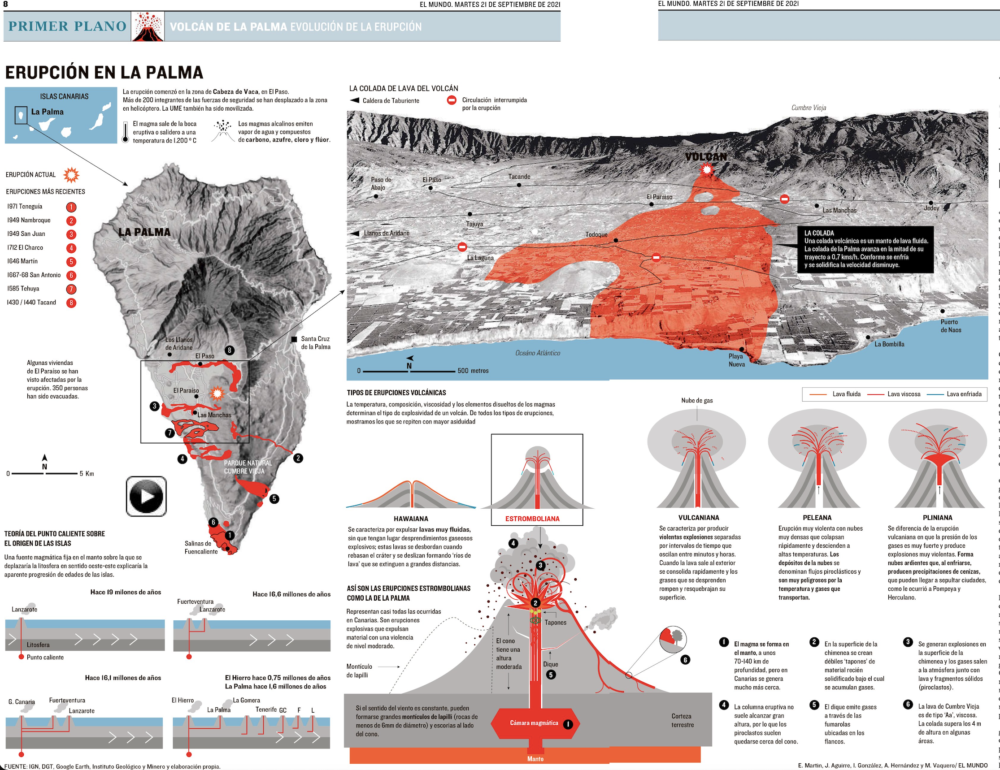

PRÁCTICA 2-COMENTARIO VISUALIZACIÓN DE DATOS
Análisis infográfico 1: Erupción volcánica La Palma
21 de septiembre 2021.
@elmundograficos

- Tipo de contenido
La infografía escogida muestra la evolución de la erupción de volcán en La Palma desde su inicio el 19 de septiembre hasta el 21 de septiembre del mismo mes (fecha de publicación en el medio). Esta cobertura informativa de 2 días recoge de manera simplificada y clara el recorrido de la lava, los daños ocasionados. Es muy interesante porque contextualiza la sobreinformación que hubo desde el primer momento, esta infografía pretende comprender los antecedentes del estallido, las razones de la erupción y el recorrido de la lava en esos dos días de cobertura.
- Estructura de la información
La información infografía esta presente en forma de imágenes y texto. Las imágenes prevalecen sobre el texto y crean un contenido más simplificado y atractivo visualmente. Podemos distinguir la estructura interna de la información por las diferentes recreaciones fotográficas y subtítulo que acompaña a cada una de ellas. La información se estructura en 4 partes bien diferenciadas, 2 de ellas en la parte izquierda de la infografía relativas al estallido y un mapa explicativo -margen superior-, y en la parte inferior con la explicación del origen de las mismas. En el lado derecho aparece una gran imagen que relata el recorrido de la colada de la lava del volcán, y en la inferior dos explicaciones, una sobre tipos de erupciones, y otra relativa a las erupciones estrombolianas como es la dada en la isla.
Empezamos con el título Erupción en La Palma, una pequeña imagen sitúa la isla dentro del archipiélago canario y pequeños emoticonos como una pequeña erupción y el símbolo de temperatura que acompaña al texto explicativo. Este texto explicativo recoge información relativa al inicio de la erupción, la cobertura de las fuerzas de seguridad, el contenido de los gases y la temperatura de los mismos.
De manera intuitiva los ojos y una fina flecha nos lleva al centro de atención, una imagen espacial de la isla. La leyenda explica cómo aparecen en rojo y numeradas las erupciones más recientes que datan de 1430-1440 hasta la última en 1971 anterior a la actual (también señalada en el mapa con un símbolo distintos, de estallido o bomba).
El siguiente subtítulo habla sobre la teoría del punto caliente sobre el origen de las islas, donde texto e imagen simplificada explican la creación hace millones de años -1,6 millones en el caso de La Palma- de la creación de las propias islas. Las imágenes utilizadas son muy fáciles de comprender y las palabras presentes son las necesarias para entender el mensaje, sin hacer un uso excesivo de las mismas que manche la imagen general de la infografía.
La parte derecha destaca por esa gran imagen digital del recorrido del volcán desde su erupción hasta la llegad al mar. Explica el recorrido de la colada e información relativa a la velocidad y características específicas de la misma. Es un mapa con una visión espacial y general que nos sitúa de manera perfecta. El apartado de tipos de erupciones volcánicas presenta los 5 tipos de erupciones acompañados de símbolos y pequeños textos explicativos. Una flecha indica la erupción estromboliana que aumenta el tamaño de la imagen y la explicación de las misma. Aparece la imagen del volcán donde se desarrollar las fases del volcán para comprender lo ocurrido en Canarias. Son distintas partes diferenciadas que guardan un claro eje común y una relación muy correcta debido al tamaño de las imágenes y texto, la cantidad de los mismos y el color utilizado.
- Colores utilizados
Los colores son sencillos y claves para la comprensión de la infografía. El blanco como fondo que ayuda a la lectura, el negro para el texto y la negrita para los destacados. Los colores principales de las imágenes y símbolos son el rojo referido a la lava, el fuego, la alarma; y el azul relativo al color del mar. La tierra y el volcán se representa mediante el color gris. Es una muy buena elección de colores que no destaca en exceso ni se vuelve demasiado colorida, teniendo esta intención informativa que ayuda al lector a entender lo expuesto de manera sencilla.
- Fuente
Otro aspecto a destacar es la utilización de las fuentes que dota a la infografía de un carácter más crítico. Es una infografía publicada en el periódico español de El Mundo, y las fuentes que indica la misma son: IGN, DGT, Google Earth, Instituto Geológico y Minero y El Mundo.
La erupción de La Palma es un asunto muy presente y actual que ha repercutido en numerosas vidas y difusión de los medios de comunicación. Es una infografía que tiene esa intención explicativa y de contexto ante la sobreinformación que hubo del suceso. Así pues, me parece una labor periodística totalmente lograda que consigue su objetivo: presentar una información compleja de manera sencilla y simplificada.